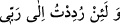
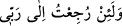

götürülürsem, hiç şüphem yok ki, (orada) bundan daha hayırlı bir âkıbet bulurum.”
Yeniden diriltilmeden ibâret olan “kıyâmetin” söylenildiği gibi “kopacağını da
sanmıyorum.” -Senin söylediğin gibi- ben yeniden diriltilerek “Şâyet Rabbimin
huzûruna götürülürsem,” orada “hiç şüphem yok ki, (orada) bundan daha hayırlı bir
âkıbet” dönüş yeri “bulurum.” İnkârcı bahçe sâhibinin bu sözü onun Rabb’ini bilip
tanıdığına delâlet etmez. Gerçi bilip tanımak (irfan) şirke mâni değildir. Çünkü o, kâfir
ve müşrikti.
el-Burhân’da şöyle der: “Allah Teâlâ burada: “
Şâyet Rabbimin
huzuruna götürülürsem” buyurdu. Fussılet sûresinde ise “
Rabbime
döndürülmüş olsam bile” (Fussılet, 41/50) buyurmuştur. Çünkü bir şeye götürülmek
(red) götürülenin bunu istemediği anlamına gelir. Şu halde Kehf suresinde durumu
anlatılan bahçe sâhibinin sözü şöyle açılabilir: “Ebediyyen yok olmayacağını sandığım
bu bahçemden Rabb’ime istemeden döndürülsem bile...” Burada götürülme lafzının
isteksizlik anlamı içermesi daha uygundur. Fussılet sûresindeki âyette ise bir istemezlik
söz konusu olmadığı için “döndürülme” lafzı ile zikredilmiştir. Bu onun her sûrede
duruma uygun olarak geçmesi içindir.
Onun bu tamahkârlığının ve yalan yere yaptığı yemininin sebebi, kendisinin bu
nimetleri hak ettiği için Allah Teâlâ’nın dünyada bu nimetleri ona verdiğine ve nereye
yönelirse yönelsin Allah’ın ikramının kendisi ile beraber olduğuna inanmasındandır. O,
bunun aslında istidrac olduğunu bilmemektedir. Yâni benim istihkâkımın gereği odur ki
bugün bana bu bağı verdiği gibi yarın da cenneti verir.
“Allah kerîmdir, rahîmdir. Bana dünyada verdiğinden daha hayırlısını âhirette de
verir” diyen kimsenin sözüne gelince bu Cenâb-ı Hakk’ın emir ve yasaklarına muhâliftir
ve Allah hakkında aldanmanın son noktasıdır. Nitekim Allah şöyle buyurur: “Ey insan!
İhsanı bol Rabbine karşı seni aldatan nedir? O Allah ki seni yarattı, seni düzgün ve
dengeli kılıp,ölçülü bir biçim verdi. Seni istediği her hangi bir şekilde parçalardan
oluşturdu. Hayır! Siz yine de dini yalanlıyorsunuz. Şunu iyi bilin ki üzerinizde
bekçiler var, Değerli yazıcılar var, Onlar, yapmakta olduklarınızı bilirler. İyiler
muhakkak cennettedirler, Kötüler de cehennemdedirler.” (el-İnfitâr, 82/6-14)
Keremimizden bir hoş ateş şûlelendirdik
Ki cürüm ve zillet, ziyâde ve noksan kalmasın